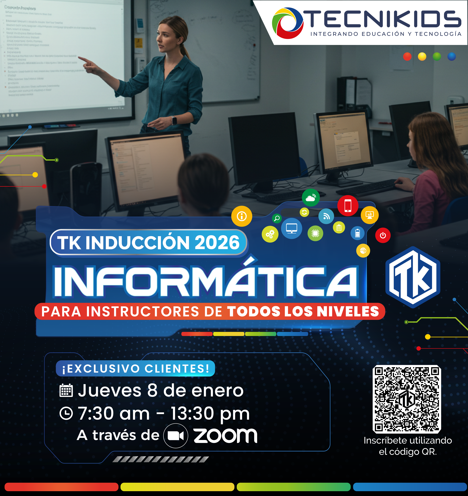

Delegue las clases de computación e informática en manos de especialistas. Programas diseñados para el siglo XXI.

Tecnikids se encarga de las clases de informática con docentes especializados, metodologías actualizadas y herramientas de vanguardia. Su institución se enfoca en lo que mejor sabe hacer, nosotros en la tecnología.
Desde Office y herramientas de productividad hasta programación con Python y certificaciones Microsoft.
Estudiantes aprendiendo programación y herramientas digitales.
Contacta con nuestro equipo en México y diseñamos el plan ideal para tu institución.